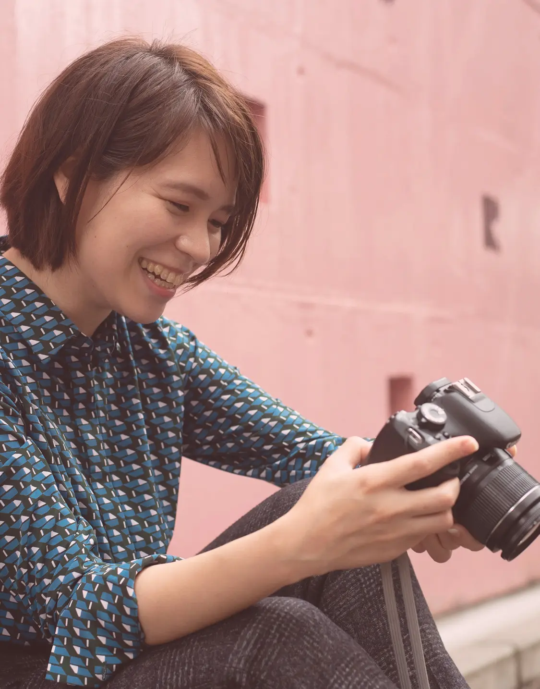
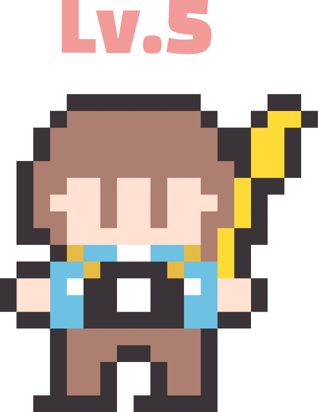
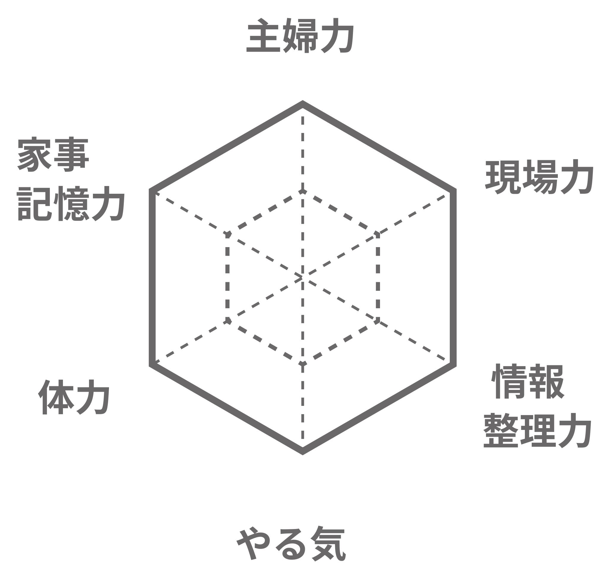
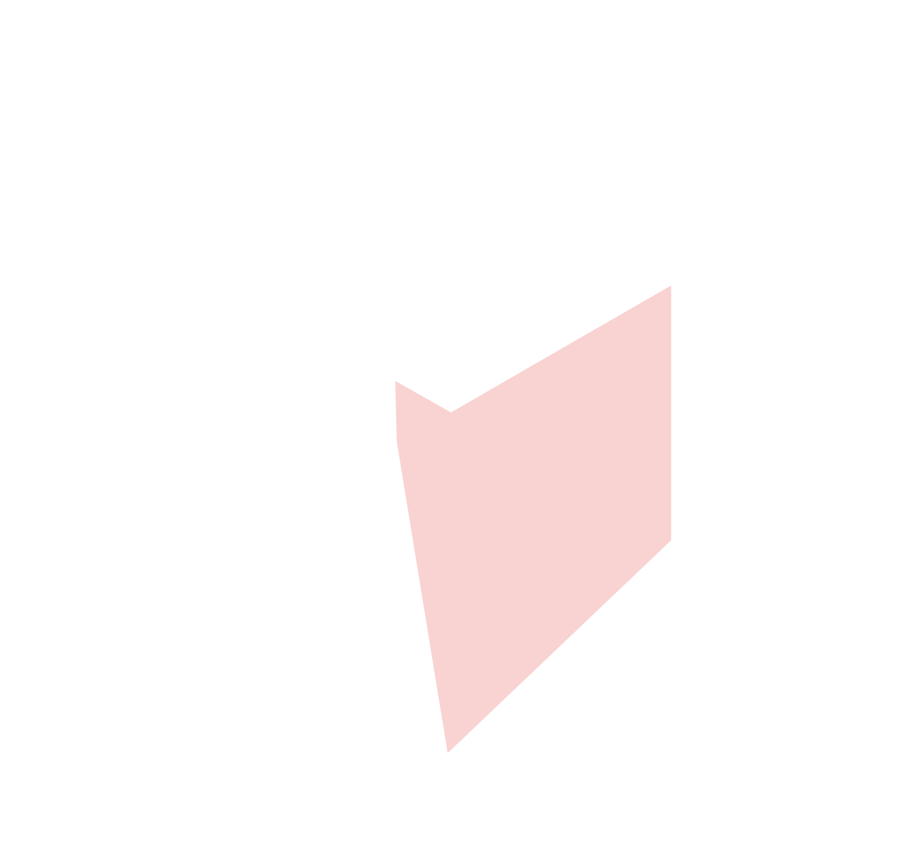
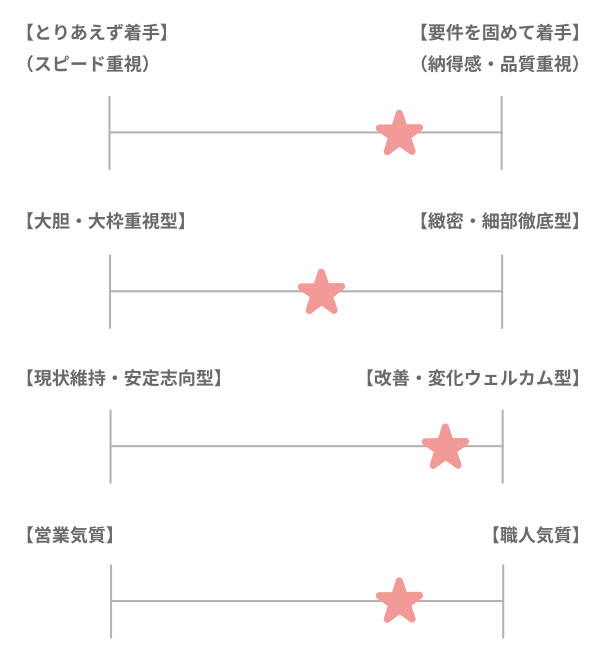
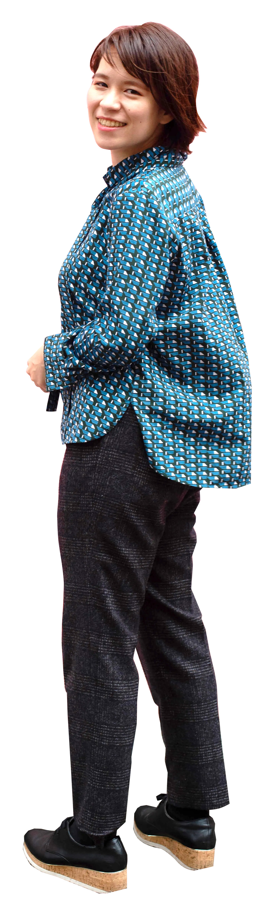
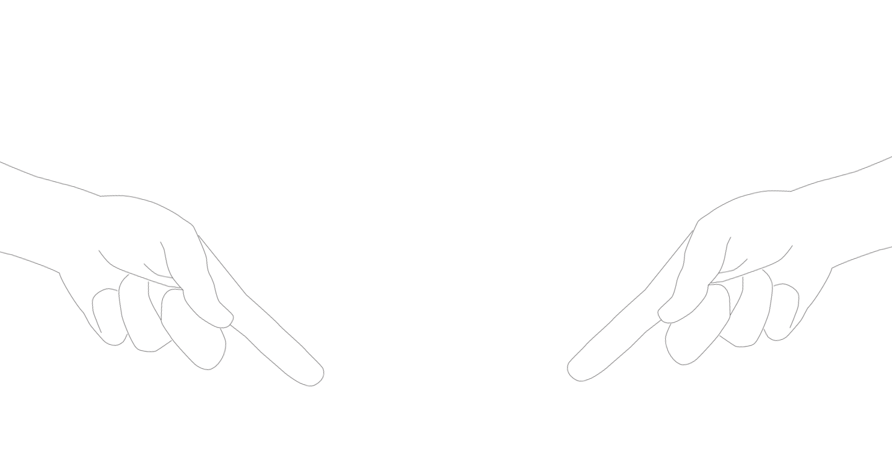

Akari Kashiwagi
Photograph / Web design / Illustration
埼玉県出身。幼少期からアクセサリーやぬいぐるみ製作などの「ものづくり」に没頭し、納得がいくまで作り込む性格でした。現在もその几帳面さを活かし、細部まで整った精度の高い制作を信条としています。キャリアの軸足はIT業界にあり、ITコンサルタントとしてモデリング（データ整理・可視化）を通じた企業支援に従事してきました。また、副業では屋外人物撮影のフォトグラファーとしても活動しています。
現在はデザインスクール等で最新のWebデザイン・実装技術を習得し、これまでの「論理的な要件定義・プロジェクト推進力」と「カメラマンとしての視覚的表現力」を融合させたWeb制作を行っています。「お客様にクライアントの魅力や情報がきちんと伝わりきること」を大事にし、サイト制作やSNS運用支援などを通してお客様の課題解決に貢献していきたいです。

私ってどんな人？



やりたいことに辿り着くまで、少し遠回りをしたかもしれませんが、ITコンサルタントとして培った「情報の整理・設計力」や、出張カメラマンとして磨いた「一瞬を切り取る表現力」は、今の私にしかない唯一無二の武器だと確信しています。
私が目指すのは、単に見た目を整えるだけでなく、お客様の抱える課題を論理的に紐解き、最適な形へと導く「伴走型」のクリエイターです。
モデリングの手法で複雑な情報を整理し、自ら撮影した写真や動画を織り交ぜて、そのブランドにしかない魅力を可視化する。そんな自分らしいスタイルを確立し、お客様の目的達成に深く貢献したいと考えています。
制作を通じて世の中を明るく彩れるよう、一つひとつのご縁を大切に、誠心誠意取り組んでまいります。
